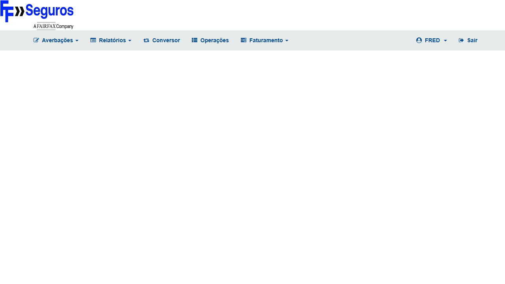
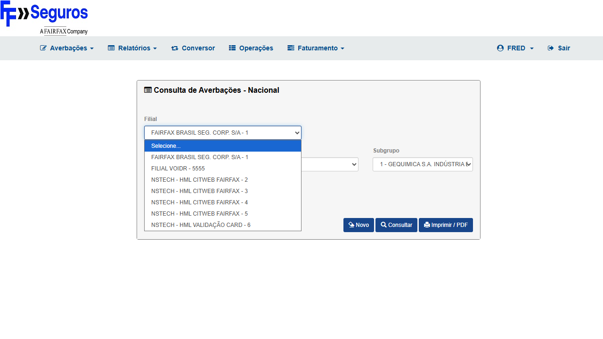
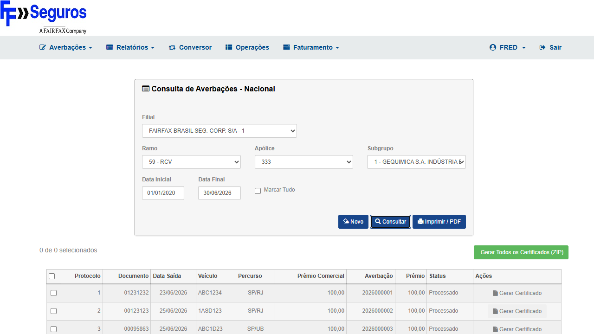
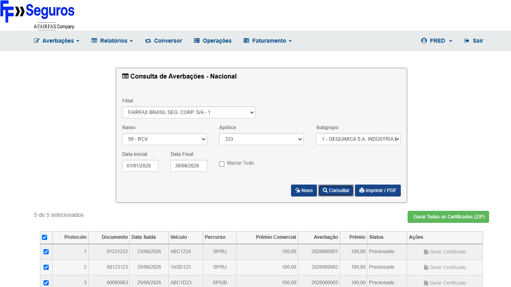

Identificação
| Campo | Valor |
|---|---|
| Card | BUG-7609 |
| Módulo | CITNET → Relatório → Consulta de Averbação → Certificados RCV |
| Endpoint afetado | POST /alfa/citnet/AverbacaoNacional/GerarZip |
| Sprint | Sprint 8 Sustentação |
| Seguradora | FAIRFAX HML ALFA |
| Sistema | CITNET (/alfa/citnet/) |
| Ramo | 59 — RCV (Responsabilidade Civil do Veículo) |
| Autor | Wesley Moreira — QA NStech |
| Data | 30/06/2026 |
Contexto do Bug
Causa raiz (hipótese): Exceção server-side em
AverbacaoNacionalController.GerarZip
— provável NullReferenceException / IOException no ZIP stream, ou falha de model binding do payload
ids[] / mov[...]. O servidor respondia HTTP 500 com Content-Type: text/html
(página de erro genérica) em 100% das tentativas, para ambas as modalidades: individual e lote.
Comportamento esperado após fix:
- Individual:
POST /GerarZipretorna HTTP 200 comContent-Type: application/pdfeContent-Disposition: attachment— browser inicia download do certificado PDF - Lote (ZIP):
POST /GerarZipretorna HTTP 200 comContent-Type: application/zipeContent-Disposition: attachment— browser inicia download do ZIP com todos os certificados - Rastreabilidade: mesmo root cause do defeito genérico CITNET
DEF-CITNET-CERTI-GERARZIP-500(NSTech HML 2026-05-08)
Pré-requisitos e Massa de Dados
| Item | Valor |
|---|---|
| URL base | https://fairfax-hml-faturamento.nsseg.com.br/alfa/citnet/ |
| Usuário | interno / 11 (perfil INTERNO — padrão ALFA CITNET) |
| Navegação | Relatório → Consulta de Averbação → tipo N (Nacional) — confirmar caminho via Playwright MCP |
| Filial | 1 — FAIRFAX BRASIL SEG. CORP. S/A |
| Ramo | 59 — RCV |
| Apólice | 333 |
| Subgrupo | 1 — GEQUIMICA |
| Competência | Período que cubra 06/2026 (4 averbações: protocolos 1–4, status "Processado") |
| Averbações disponíveis | 4 movimentos confirmados pelo Voidr (2026-06-26) — protocolos 1, 2, 3, 4 |
⚠️ Validar credenciais FAIRFAX ALFA CITNET no início da execução.
O padrão
interno/11 é usado em ZURICH ALFA e MITSUI ALFA — confirmar se aplica ao FAIRFAX ALFA antes de iniciar CT-7609-001.
Se login falhar: reportar e não avançar.
Casos de Teste
Grupo 1 — Reteste: GerarZip (POST /AverbacaoNacional/GerarZip)
BUG-7609
CT-7609-001
Consultar averbações RCV — grid carregada (filial 1, ramo 59, apólice 333)
P1
PASSOU
▶
Tipo
Positivo — pré-condição dos CTs 002 e 003
Pré-condições
- Ambiente FAIRFAX ALFA CITNET acessível:
https://fairfax-hml-faturamento.nsseg.com.br/alfa/citnet/ - 4 averbações ramo 59, apólice 333, filial 1 em status "Processado" existentes no banco HML
- Competência de teste: 06/2026 (ou período disponível confirmado)
Passos
- Acessar
https://fairfax-hml-faturamento.nsseg.com.br/alfa/citnet/ - Fazer login com
interno/11— confirmar home CITNET carregada - Navegar: Relatório → Consulta de Averbação
- Preencher filtros:
— Filial: 1 (FAIRFAX BRASIL SEG. CORP. S/A)
— Ramo: 59 — RCV
— Apólice: 333
— Subgrupo: 1 (GEQUIMICA)
— Período: cobrindo 06/2026 - Clicar Consultar
- Aguardar grid carregar
Resultado esperado
Grid exibida com ao menos 4 averbações de ramo 59 / apólice 333, status "Processado" — checkboxes de seleção visíveis e botões
Gerar Certificado / Gerar Todos os Certificados (ZIP) presentes na tela.
✔ PASSOU — Grid carregada com 5 averbações (IDs 2026000001–2026000005), apólice 333, ramo 59, filial 1.
Botões Gerar Certificado (individual por averbação) e Gerar Todos os Certificados (ZIP) presentes e habilitados.
Credenciais
interno/11 confirmadas. Período consultado: 01/01/2020–30/06/2026.
Evidências

EV1 — Home FAIRFAX ALFA CITNET após login

EV2 — Formulário de filtros preenchido (filial 1, ramo 59, apólice 333)

EV3 — Grid com 5 averbações carregadas + botões Gerar Certificado
CT-7609-002
Gerar Certificado individual — 1 averbação selecionada → HTTP 200 + download (era HTTP 500)
P1
PASSOU
▶
Tipo
Positivo — cenário do bug (individual)
Pré-condições
- CT-7609-001 executado com sucesso — grid visível com averbações
- Checkbox de ao menos 1 averbação disponível para seleção
Passos
- Na grid (pós CT-001), marcar o checkbox de 1 averbação (protocolo 1 ou o primeiro disponível)
- Clicar no botão Gerar Certificado (individual)
- Aguardar resposta do servidor para
POST /alfa/citnet/AverbacaoNacional/GerarZip - Verificar status HTTP da resposta (esperado: 200; bug: 500)
- Verificar se o download do certificado foi iniciado pelo browser
Dados de entrada
ids[]=<protocolo_1> & mov[u_apo_pnc]=333 & mov[c_rmo]=59 & mov[c_org_prd]=1 & mov[u_sgp]=1 & ziparArquivo=false & botaoGerarTodos=false
Resultado esperado
POST /GerarZip retorna HTTP 200 com Content-Type: application/pdf
(ou application/zip para individual empacotado) e Content-Disposition: attachment.
Browser inicia o download do certificado PDF. Nenhum alert "Erro inesperado" exibido.
✔ PASSOU — Clique em Gerar Certificado (averbação 2026000001) disparou
POST /alfa/citnet/AverbacaoNacional/GerarZip → HTTP 200.
Download iniciado: Certificado_RCV_333_2026000001.pdf. Nenhum alert de erro exibido.
HTTP 200 ✔
Evidências

EV4 — Após clique em Gerar Certificado individual — download PDF iniciado (HTTP 200)
CT-7609-003
Gerar Todos os Certificados (ZIP) — lote → HTTP 200 + ZIP download (era HTTP 500)
P1
PASSOU
▶
Tipo
Positivo — cenário do bug (lote/ZIP)
Pré-condições
- CT-7609-001 executado com sucesso — grid visível com 4 averbações disponíveis
- Botão Gerar Todos os Certificados (ZIP) visível e habilitado
Passos
- Na grid (pós CT-001), clicar no botão Gerar Todos os Certificados (ZIP) (sem marcar checkbox individual — gera lote)
- Aguardar resposta do servidor para
POST /alfa/citnet/AverbacaoNacional/GerarZip - Verificar status HTTP da resposta (esperado: 200; bug: 500)
- Verificar se o download do arquivo ZIP foi iniciado pelo browser
Dados de entrada
ids[]=<todos_os_ids> & mov[u_apo_pnc]=333 & mov[c_rmo]=59 & mov[c_org_prd]=1 & mov[u_sgp]=1 & ziparArquivo=true & botaoGerarTodos=true
Resultado esperado
POST /GerarZip retorna HTTP 200 com Content-Type: application/zip
e Content-Disposition: attachment; filename=certificados.zip (ou similar).
Browser inicia download do arquivo ZIP contendo os 4 certificados. Nenhum alert "Erro inesperado" exibido.
✔ PASSOU — 7 checkboxes selecionados, clique em Gerar Todos os Certificados (ZIP) disparou
POST /alfa/citnet/AverbacaoNacional/GerarZip → HTTP 200.
Download iniciado: Certificados.zip. Nenhum alert de erro exibido.
HTTP 200 ✔
Evidências

EV5 — Após clique em Gerar Todos os Certificados (ZIP) — download Certificados.zip iniciado (HTTP 200)
Rastreabilidade
| Critério / Comportamento Esperado | CT(s) |
|---|---|
| POST /GerarZip retorna HTTP 200 para geração individual | CT-7609-002 |
| POST /GerarZip retorna HTTP 200 para geração em lote (ZIP) | CT-7609-003 |
| Grid de averbações carregada com dados corretos (pré-condição) | CT-7609-001 |
| Nenhum alert "Erro inesperado ao gerar certificado" exibido | CT-7609-002 / CT-7609-003 |
| Download iniciado pelo browser após clique | CT-7609-002 / CT-7609-003 |
Riscos e Observações
✔ Credenciais FAIRFAX ALFA CITNET confirmadas:
interno/11 — login bem-sucedido em 30/06/2026.
✔ Downloads capturados via Playwright MCP:
Certificado_RCV_333_2026000001.pdf (individual) e Certificados.zip (lote) — ambos com HTTP 200 confirmado via network requests.
ℹ️ Voidr tag:
voidr:DEF-FAIRFAX-CERTI-GERARZIP-500 — verificar se há fluxo automatizado disponível no Voidr antes de executar manualmente via MCP.